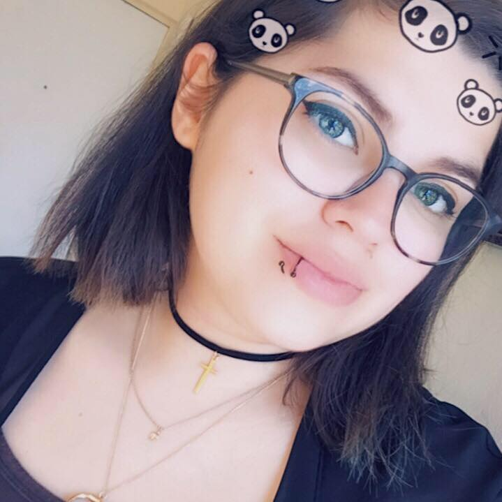

Om mig
Jag heter Valentina och är 24 år. Mitt stjärntecken är stenbocken då jag är född den 15 januari.
Jag bor i Växjö tillsammans med min sambo Mike, och vår franska bulldogg Django.
Just nu studerar jag biblioteks- och informationsvetenskap vid Linnéuniversitet samtidigt
som jag studerar till Frontend utvecklare hos EC utbildning.
På fritiden gillar jag att spela spel, titta på filmer/serier, läsa böcker,
surfa online och umgås med familjen.